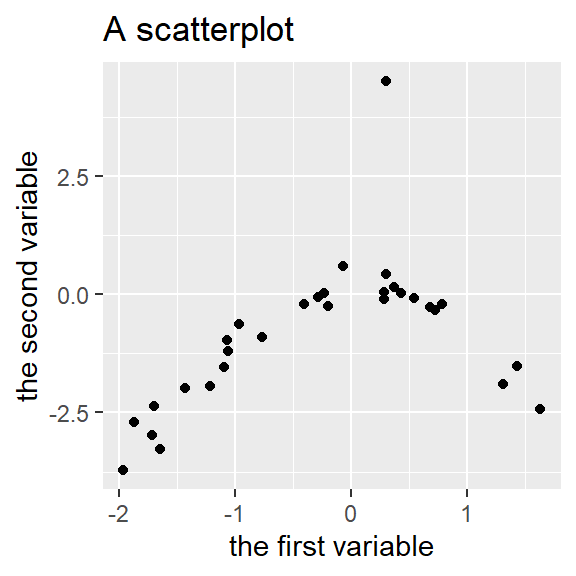
Tutorial: Drawing a scatterplot
Graphs are incredibly useful both for understanding your own data and for communicating your insights to your audience. This is why the next few blog posts will consist of tutorials on how to draw four kinds of graphs that I find most useful: scatterplots, linecharts, boxplots and some variations, and Cleveland dotplots. These tutorials are aimed primarily at the students in our MA programme. Today’s graph: the scatterplot.
What’s a scatterplot?
A scatterplot is one of the most useful kind of graphs in your toolbox. Any time your data consists of pairs of fairly fine-grained measurements such as people’s heights and weights, a scatterplot is one of the top alternatives. To draw one, you plot each pair of measurements in an x/y plane, like this:
Plotting the data in this way often gives the reader – and yourself – a good idea of how the two measurements are related. We can immediately see what range both variables span and how differences in one variable are related to differences in the other one. In this case, the relationship between the two variable is distinctly non-linear, the direction of the relationship changing when the first variable is 0. Additionally, it’s immediately obvious that one pair of measurements stands out from the rest of the data and may need triple-checking.
When researchers are interested in how two variables are correlated, they often overeagerly jump straight to computing correlation coefficients. But correlation coefficients can deceive: low correlation coefficients (r) can hide strong but non-linear relationships (left panel), whereas high correlation coefficients can be caused by a single outlying data point (middle) or may gloss over distinct groups in the datasets within each of which the direction of relationship is actually the reverse of the one indicated by the correlation coefficient (right). It’s only in a scatterplot that the meaning of a correlation coefficient – or lack thereof – becomes clear.
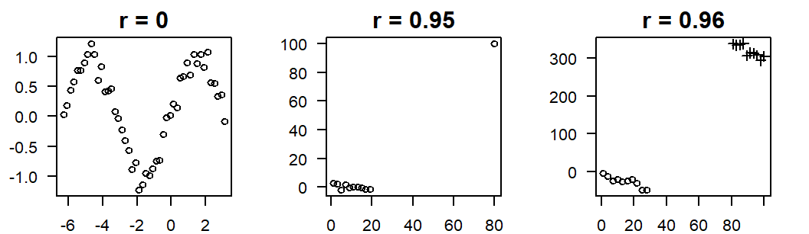
Bottom line: Any time you want to compute a correlation coefficient, draw a scatterplot first and show it to your audience.
Tutorial: Drawing a scatterplot in ggplot2
In this tutorial, you’ll learn how to draw a basic scatterplot and how you can tweak it. For this, we’ll make use of the free statistical program R and the add-on package ggplot2. ggplot2 is an extremely powerful tool for plotting data, and gaining familiarity with it through fairly simple examples will pay dividends if you’re ever going to work with more complex data.
What you’ll need
- The free program R.
- The graphical user interface RStudio – also free. Download and install R first and only then RStudio.
I’m going to assume some familiarity with these programs. Specifically, I’ll assume that you know how to enter commands in RStudio and import datasets stored in the CSV file format. If you need help with this, see Chapter 3 of my introduction to statistics (in German) or Google importing data R.
- The ggplot2 add-on package for R. To install it, simply enter the following command at the prompt in RStudio. (Update (2023-08-08): By now, the
ggplot2package has been integrated in thetidyversesuite of packages.)
install.packages("ggplot2")- A dataset with pairs of fairly fine-grained measurements. For this tutorial, we’ll use a dataset on receptive multilingualism which was compiled by showing about 100 German speakers lists of Danish, Dutch, Frisian and Swedish words and asking them to translate these words into German. The dataset consists of four variables: the word shown; the language of the word; the degree of orthographic distance between this word and its translation equivalent in German, English or French (possible values between 0 and 1); and the proportion of participants that correctly translated the word (between 0 and 1). Download this dataset to a local drive.
Preliminaries
In RStudio, read in the data. Setting encoding to "UTF-8" ensures that letters with diacritics (ä, ö, å etc.) are read in correctly.
translations <- read.csv(file.choose(), encoding = "UTF-8",
stringsAsFactors = TRUE)If the summary looks like this, you’re ready to go.
summary(translations) Item Language OrthographicDistance ProportionCorrect
aai : 1 Danish :45 Min. :0.0000 Min. :0.0000
aarde : 1 Dutch :46 1st Qu.:0.2222 1st Qu.:0.2243
anslutning: 1 Frisian:45 Median :0.3333 Median :0.4860
antal : 1 Swedish:45 Mean :0.3563 Mean :0.4906
applåd : 1 3rd Qu.:0.4545 3rd Qu.:0.7757
armoede : 1 Max. :0.8571 Max. :0.9907
(Other) :175 A first attempt
Load the ggplot2 package you installed earlier. You don’t need to reinstall the ggplot2 package every time you use it, but you do need to load it each time you fire up R/RStudio.
library(ggplot2)Above, we read in the dataset as translations. The variables in this dataset that we want to plot are OrthographicDistance and ProportionCorrect. Since it stands to reason that the orthographic distance between a word and its translation equivalents affects how easily it can be understood, but not vice versa, we’ll put OrthographicDistance along the x-axis and ProportionCorrect along the y-axis.
In the ggplot function, we first specify which dataset contains the variables we want to display and then define the ‘aesthetics’ of the graph we want to draw, i.e., which variable we want to put on the x-axis and which one on the y-axis:
ggplot(data = translations,
aes(x = OrthographicDistance,
y = ProportionCorrect))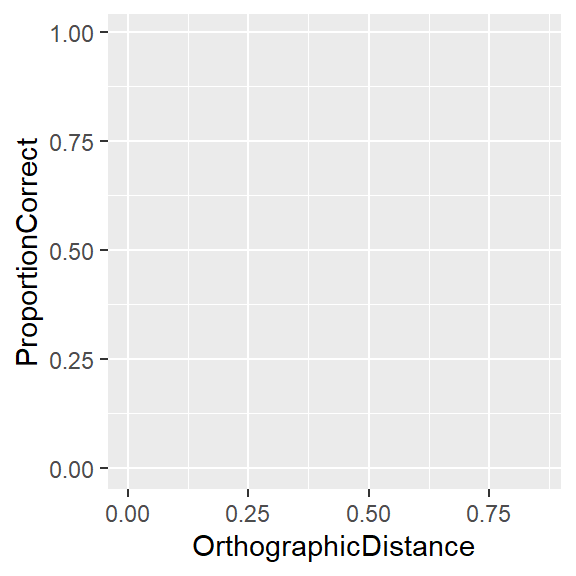
The plot above shows an empty coordinate system. The reason is that we haven’t told ggplot how we want to display the pairs of measurements. Usually, we plot them as dots or circles. To achieve this, we add another layer consisting of points to the coordinate system:
ggplot(data = translations,
aes(x = OrthographicDistance,
y = ProportionCorrect)) +
geom_point()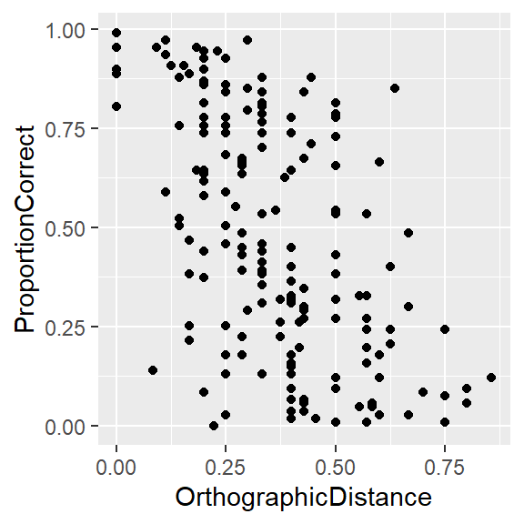
It’s possible to change the appearance of these dots, for instance by setting the shape parameter. For further examples, see the ggplot2 documentation.
ggplot(data = translations,
aes(x = OrthographicDistance,
y = ProportionCorrect)) +
geom_point(shape = 1)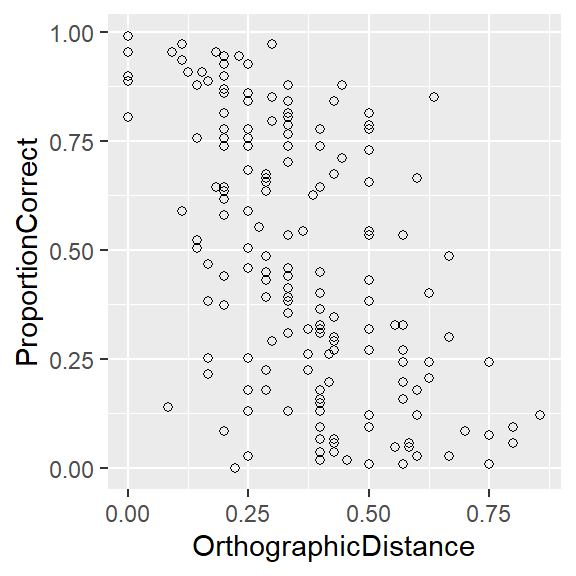
Make it reader-friendly
The main trend is clear from the graph above: words with a larger orthographic distance to their translation equivalents are translated correctly less often. (Nothing out of the ordinary, I’ll admit.) Graphs like these are great for learning about your own data, but they need some tweaking before you can use them in a presentation or term paper. Specifically, the default axis names aren’t usually very meaningful to other people, and even if they are, they look a bit slapdash. By specifying the xlab and ylab layers, you can give the axes more interpretable titles. The theme_bw layer get rid of the default grey background.
ggplot(data = translations,
aes(x = OrthographicDistance,
y = ProportionCorrect)) +
geom_point(pch = 1) +
xlab("orthographic Levenshtein distance") +
ylab("proportion of correct translations") +
theme_bw()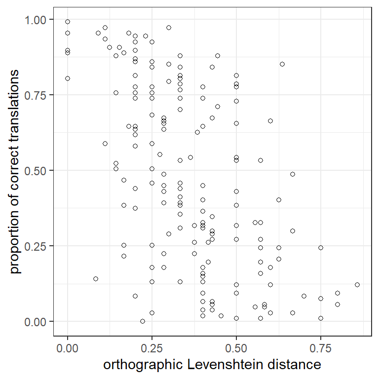
Labels instead of points
Instead of plotting points, we can plot the words that the points stand for. This makes it easier to identify data points that go against the grain – words with high orthographic distances that are easy to understand and vice versa. The words are stored in the Item column; to plot them, we need to add the label aesthetic to the ggplot call and specify that we want to plot text labels instead of points.
ggplot(data = translations,
aes(x = OrthographicDistance,
y = ProportionCorrect,
label = Item)) + # specify label aesthetic
geom_text() + # plot text labels instead of points
xlab("orthographic Levenshtein distance") +
ylab("proportion of correct translations") +
theme_bw()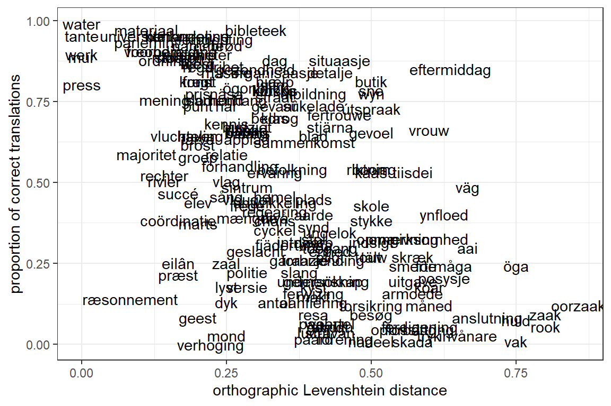
Words that are easy to understand despite their high orthographic distance (e.g., eftermiddag) or that are difficult to understand despite their low orthographic distance (e.g., ræsonnement) can now be identified. That said, with all the overlapping labels, the scatterplot looks crowded. We can make the font size a bit smaller, but with 181 labels, this plot is always going to look crowded. That said, this kind of plot would work well for smaller datasets.
ggplot(data = translations,
aes(x = OrthographicDistance,
y = ProportionCorrect,
label = Item)) +
geom_text(size = 3) + # change font size
xlab("orthographic Levenshtein distance") +
ylab("proportion of correct translations") +
theme_bw()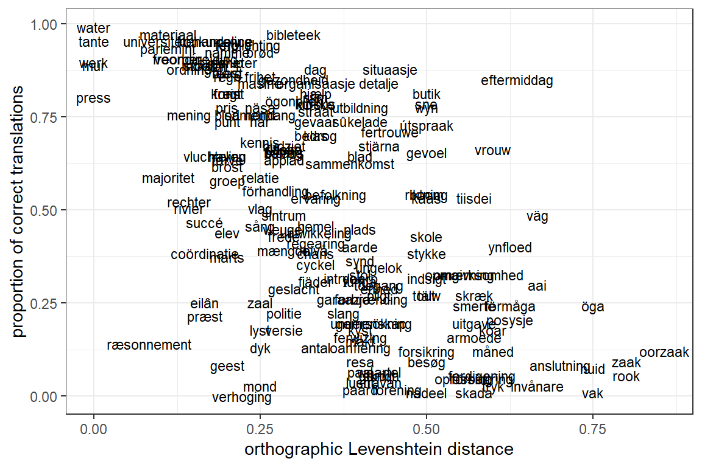
Instead of plotting labels for all words, we could just plot the labels of a handful of words and use dots for the rest:
ggplot(data = translations,
aes(x = OrthographicDistance,
y = ProportionCorrect,
label = Item)) +
geom_point(shape = 1) + # change font size
xlab("orthographic Levenshtein distance") +
ylab("proportion of correct translations") +
theme_bw() +
annotate("text", x = 0.72, y = 0.86, label = "eftermiddag", colour = "red")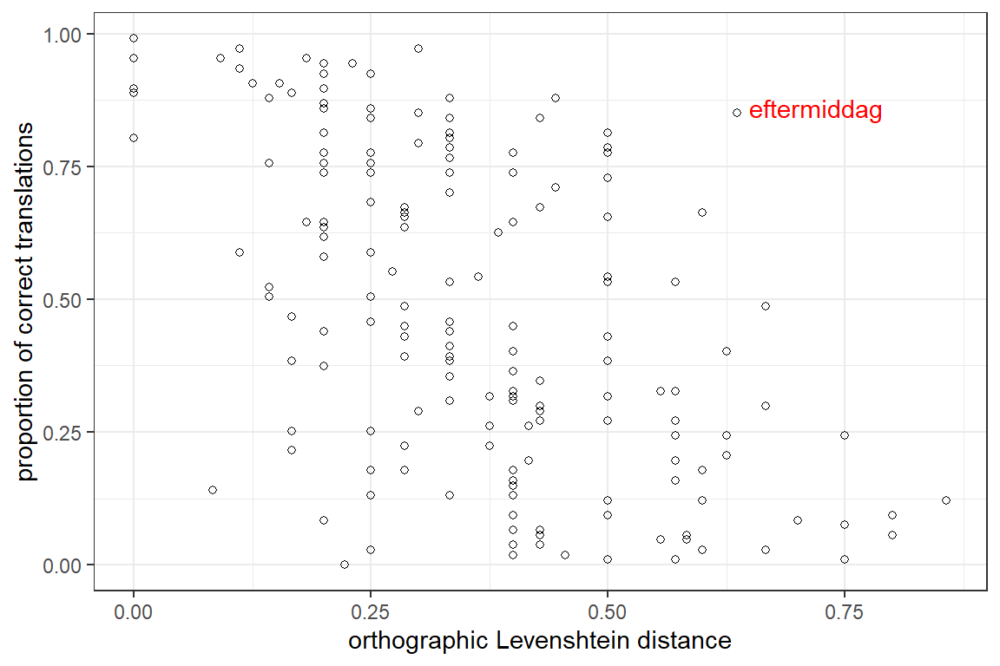
Adding a trend line
To highlight the trend in the data even more, you can add a trend line to the scatterplot. In ggplot2, this is a matter of adding another layer to the call (geom_smooth). If you put the geom_smooth after the geom_text layer, the trend line is plotted on top of the text labels; if you put it before geom_text, it’s plotted below the labels.
ggplot(data = translations,
aes(x = OrthographicDistance,
y = ProportionCorrect)) +
geom_text(size = 3,
aes(label = Item)) +
geom_smooth(method = "loess",
formula = "y ~ x") +
xlab("orthographic Levenshtein distance") +
ylab("proportion of correct translations") +
theme_bw()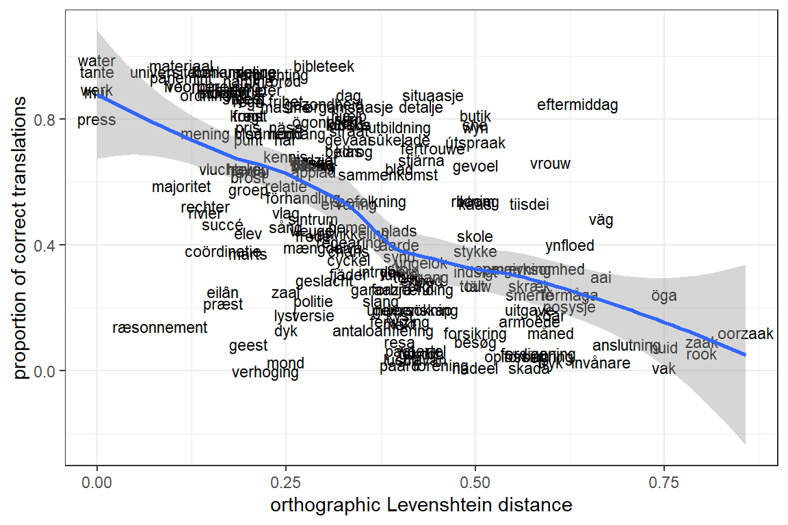
By default, the trend line is a non-linear one, is plotted in blue and is accompanied by a grey confidence band. This can all be modified, however. Below, I turn off the confidence band (se = FALSE) because it extents to proportions below 0 – which doesn’t make sense here. I also change the colour to red, just because.
ggplot(data = translations,
aes(x = OrthographicDistance,
y = ProportionCorrect)) +
geom_text(size = 3,
aes(label = Item)) +
geom_smooth(method = "loess",
formula = "y ~ x",
se = FALSE, colour = "red") +
xlab("orthographic Levenshtein distance") +
ylab("proportion of correct translations") +
theme_bw()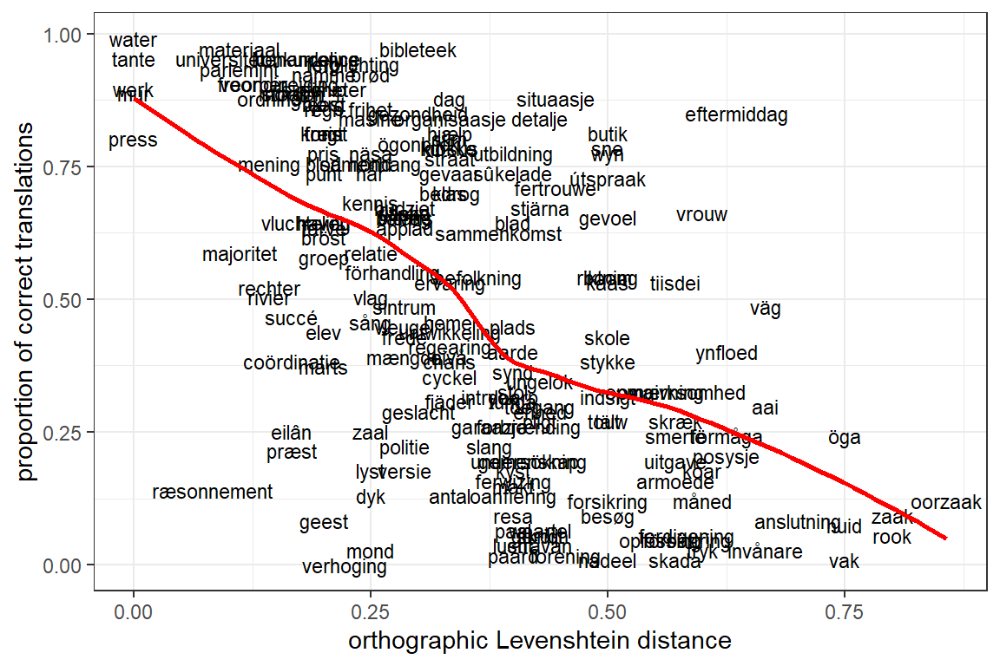
Using panels
If the data consist of different groups, it can be a good idea to draw separate scatterplots for each group. In this example, 45 of the 181 words were Danish, 46 were Dutch, 45 Frisian and 45 Swedish. To draw separate scatterplots for each of these four languages, we add facet_wrap to the ggplot call:
ggplot(data = translations,
aes(x = OrthographicDistance,
y = ProportionCorrect)) +
geom_point(shape = 1) +
geom_smooth(method = "loess",
formula = "y ~ x",
se = FALSE, col = "red") +
xlab("orthographic Levenshtein distance") +
ylab("proportion of correct translations") +
facet_wrap(vars(Language), ncol = 4) + # split up by Language and plot in four columns
theme_bw()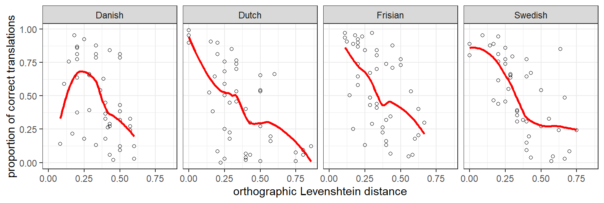
Or with labels instead of points, so that we can see which items cause the trend line for Danish to look so different from the other ones:
ggplot(data = translations,
aes(x = OrthographicDistance,
y = ProportionCorrect)) +
geom_text(size = 2.2,
aes(label = Item)) +
geom_smooth(method = "loess",
formula = "y ~ x",
se = FALSE, col = "red") +
xlab("orthographic Levenshtein distance") +
ylab("proportion of correct translations") +
facet_wrap(vars(Language), ncol = 2) + # 2 columns
theme_bw()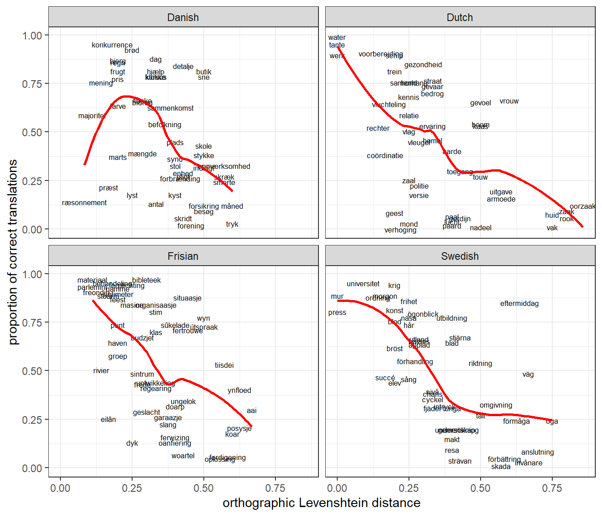
Learning more
The ggplot2 online documentation is great, and you’ll find a wealth of information by googling keywords such as ggplot2 label points scatterplot.
Software versions
devtools::session_info(pkgs = "attached")─ Session info ───────────────────────────────────────────────────────────────
setting value
version R version 4.3.1 (2023-06-16 ucrt)
os Windows 10 x64 (build 18363)
system x86_64, mingw32
ui RTerm
language (EN)
collate English_United Kingdom.utf8
ctype English_United Kingdom.utf8
tz Europe/Zurich
date 2023-08-09
pandoc 3.1.1 @ C:/Program Files/RStudio/resources/app/bin/quarto/bin/tools/ (via rmarkdown)
─ Packages ───────────────────────────────────────────────────────────────────
package * version date (UTC) lib source
ggplot2 * 3.4.2 2023-04-03 [1] CRAN (R 4.3.1)
[1] C:/Users/VanhoveJ/AppData/Local/R/win-library/4.3
[2] C:/Program Files/R/R-4.3.1/library
──────────────────────────────────────────────────────────────────────────────